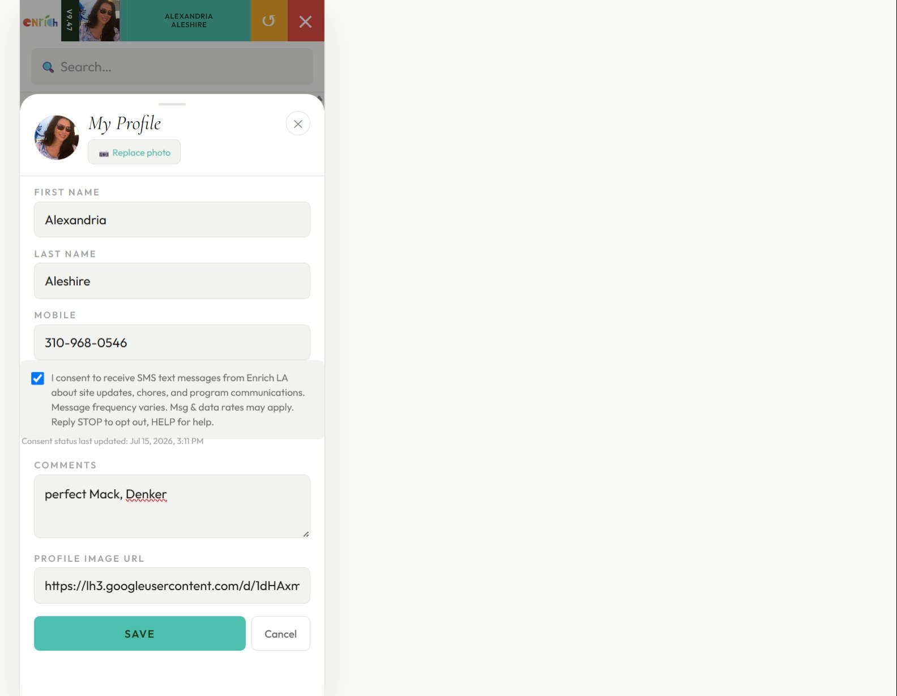

Enrich LA · Garden Rangers program · Internal staff application
Ranger Rover is an internal, login-required field tool used exclusively by Enrich LA staff
("Garden Rangers") to manage school garden sites, tasks, and program communications.
Because the application requires authenticated staff login, the live opt-in screen is not
directly reachable by outside reviewers. This page documents the exact opt-in mechanism,
the consent language shown to users, and how consent is recorded, for A2P 10DLC campaign
verification purposes.
Who sends / receives messages
Enrich LA sends operational SMS messages to its own field staff (Garden Rangers) —
for example, site visit reminders, chore assignments, and program updates. This is
staff-to-staff operational messaging, not consumer marketing.
How a user opts in
A Garden Ranger is added to the system by an Enrich LA administrator as part of normal staff onboarding (name, email, mobile number).
The ranger logs into Ranger Rover with their staff email and opens My Profile from the app header.
On the My Profile screen, the ranger sees an SMS consent checkbox that is unchecked by default. Consent is entirely optional and is never required to use the app or receive other program services.
The exact consent language presented is shown below.
When the ranger checks or unchecks the box and taps Save, the change is written to the organization's records together with a timestamp, so there is always a record of when consent status last changed.
Exact opt-in language shown in-app
☐ I consent to receive SMS text messages from Enrich LA about site updates, chores, and
program communications. Message frequency varies. Msg & data rates may apply.
Reply STOP to opt out, HELP for help.
Screenshot — My Profile screen, SMS consent checkbox

Screenshot taken from the production Ranger Rover app (My Profile screen), showing the
opt-in checkbox in its default, unchecked state.
Opt-out and help
Recipients can reply STOP at any time to a Ranger Rover text message to opt out
immediately, or HELP for assistance. Opting out does not affect the recipient's
employment, access to the Ranger Rover app, or any other Enrich LA service.
Consent record-keeping
Each ranger's consent status and the timestamp of the most recent change are stored in
Enrich LA's internal staff records and are available to Enrich LA administrators on request.